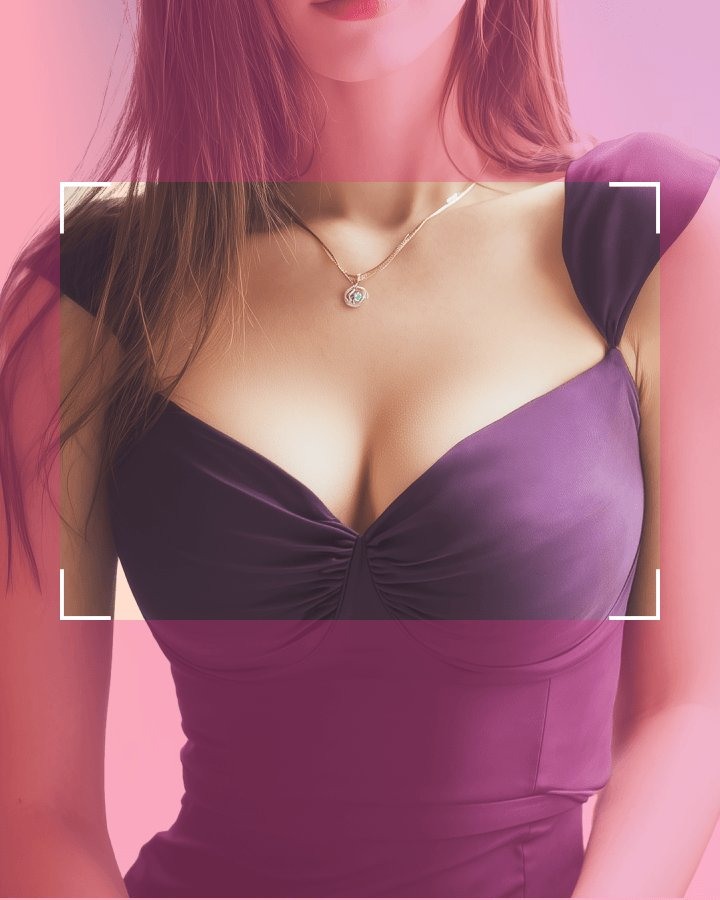
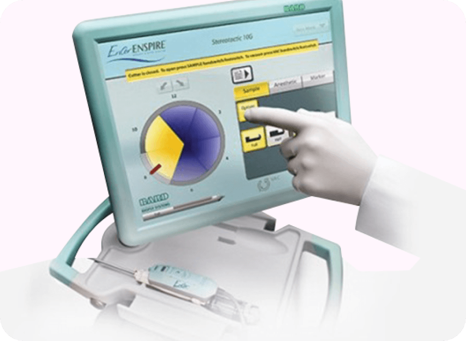
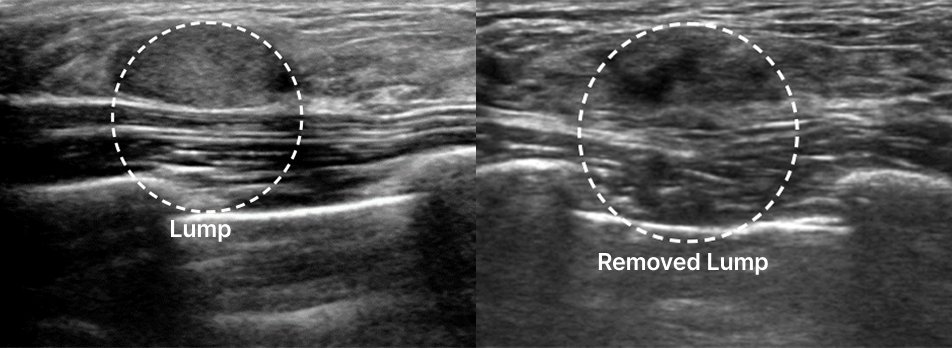
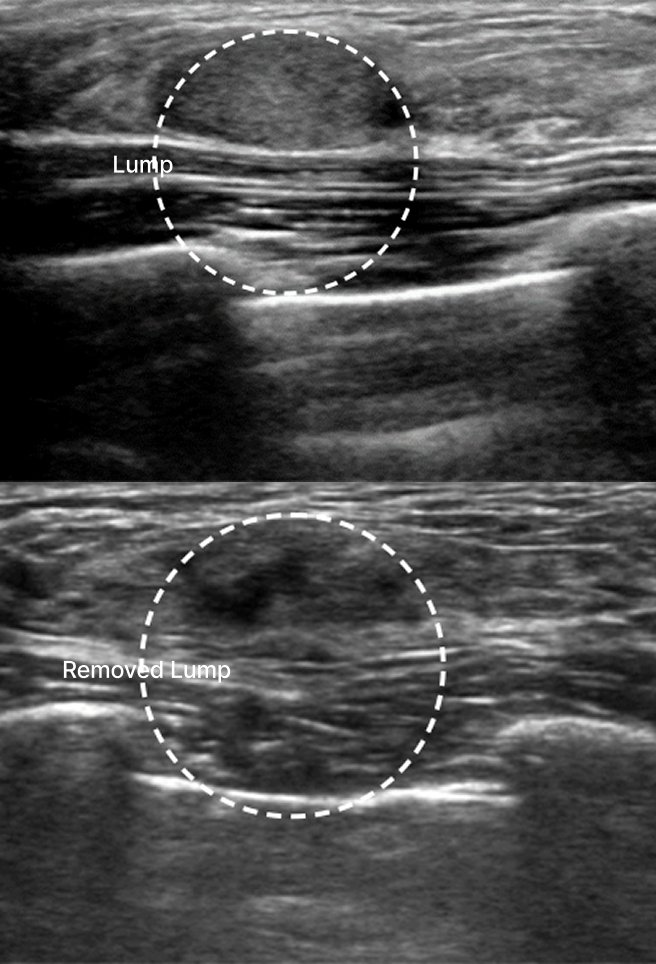
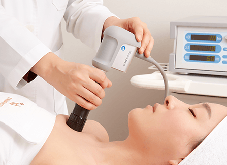
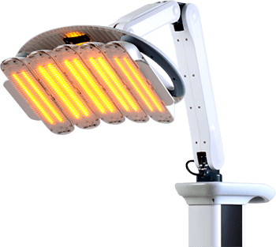
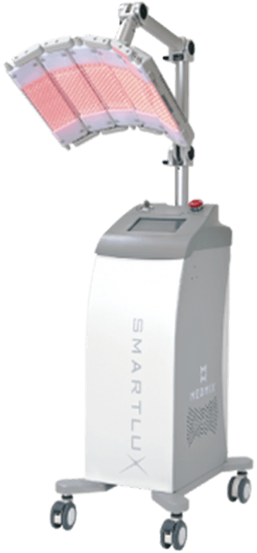
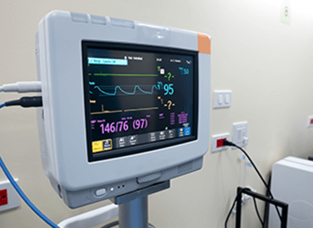
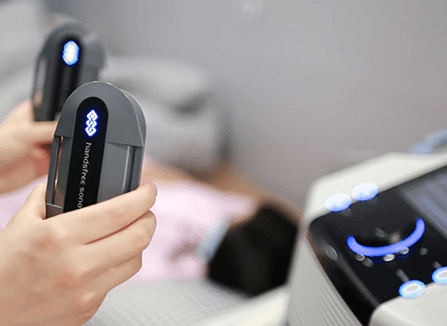
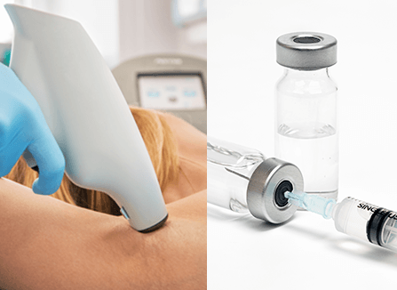

相信您的直觉。是时候做一次检查了——乳腺检查中心
隆胸前的乳腺检查不是可选项——而是必选项！
在 凡是与美, 非常 经验丰富 乳房外科专家
彻底检查患者隆胸手术前后的情况。

使用最新型 Mammotome 装置减轻疼痛！
采用微创切口，术后也无需担心疤痕。
凭借治疗多种乳房疾病的丰富经验和临床实践，
我们全国认证的乳房外科专家携手合作，提供更安全、更专业的护理。
根据乳腺组织的大小和深度，实施 1:1 定制化手术！
肿块切除前后


使用 凡是与美 先进的麦默通技术，我们精确测定
患者的乳房组织密度和假体情况，然后制定定制化的1:1手术方案。
即使做过隆胸手术，也无需担心损伤假体。
我们的乳房疾病专家使用
微创切口进行安全精准的麦默通治疗。
恢复才是真正的开始！专业术后管理






是否适合乳房缩小术，应根据患者的症状和身体状况，通过咨询和术前医学检查来确定。
如何确认是否适合
为什么咨询很重要
在 凡是与美
是的。凡是与美将乳房修复手术描述为需要精心规划的手术，包括与胸部外科专家咨询以及利用乳房超声进行原因分析。
何时需要考虑修复手术
在 凡是与美
乳房提升主要用于矫正下垂，而提升与隆胸结合则可通过假体同时增大乳房。
如何比较各方案
在 凡是与美
患者应比较主要困扰是下垂、乳房大小还是两者兼有，并通过面诊确认合适的方案。
各方案的差异
在 凡是与美
在凡是与美，胸部增大术的切口方案是在咨询、医学检查和假体选择后决定的。
手术方案如何规划
在 凡是与美
由于乳房提升术和隆胸的手术细节不同，恢复情况也会有所不同。
恢复信息
在 凡是与美
乳房提升与假体解决的是不同的问题，因此长期规划应综合考虑下垂矫正、容积目标、假体选择和术后护理。
目标的差异
在 凡是与美
出行时机应事先与凡是与美确认，因为所提供页面描述了检查步骤和手术恢复时间，但并未为所有胸部手术给出统一的停留时长。
日程如何安排
在 凡是与美
暂无帖子

凡是与美携手 Mentor，以高端质感与自然手感，为您塑造贴合身形的理想胸型。

所有假体均可注册保修，是否带芯片皆可；术后 6 年内如出现假体破裂或贝克中重度包膜挛缩，提供二次手术费用与假体支持。

区别于传统双平面技术，凡是与美采用独特术式，借助周围组织形成三重支撑，让乳沟更集中，同时降低假体向两侧或下方移位的风险。

凡是与美提供完善的术后护理，涵盖 Heal-Light 愈合光疗、SmartLux、包膜挛缩治疗、Endermologie RF 射频、舒缓石袋与定制压缩衣，全程护航术后恢复。